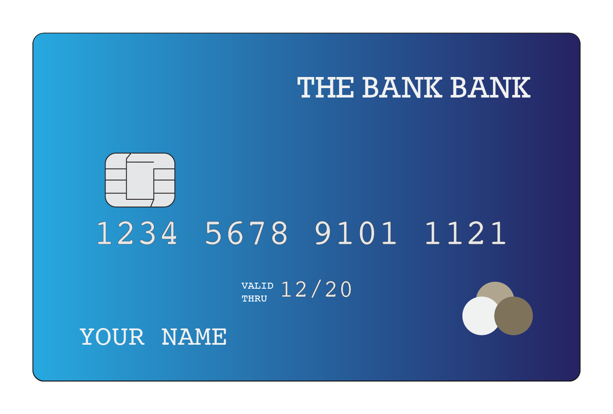

Let’s find out what your monitor size is (click to go into full screen mode).
Please use any credit card that you have available (it can also be a grocery store membership card, your drivers license, or anything that is of the same format), hold it onto the screen, and adjust the slider below to its size.
(If you don't have access to a real card, you can use a ruler to measure image width to 3.37inch or 85.6mm, or make your best guess!)
Make sure you put the card onto your screen.
Now, let’s quickly test how far away you are sitting.
You might know that vision tests at a doctor’s practice often involve chinrests; the doctor basically asks you to sit away from a screen in a specific distance. We do this here with a “virtual chinrest”.
Instructions
1. Put your finger on space bar on the keyboard.
2. Close your right eye. (Tips: it might be easier to cover your right eye by hand!)
3. Using your left eye, focus on the black square.
4. Click the button below to start the animation of the red ball. The red ball will disappear as it moves from right to left. Press the “Space” key as soon as the ball disappears from your eye sight.
Please do it five times. Keep your right eye closed and hit the “Space” key fast!
Hit 'space'
Estimated viewing distance (cm):
View more output data in the Console in your browser's developer/inspector view.